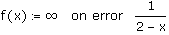

Error Handling in Programs |
Keystroke: [Ctrl] [']
Do not type the words "on error." They do not produce the operator.
x on error y
Evaluates y. If y produces an error, evaluates and returns x. Otherwise returns the results of y. The on error operator is a distinct type of conditional operator, guiding execution only in the event of an error during calculation.
Here, on error is used to avoid dividing by zero; when x is 2, the program evaluates as ∞, rather than returning a singularity.

f(1) = 1
f(2) = 1 · 10307
The left placeholder should contain code that always evaluates properly. You can use on error to return a variable for debugging purposes, perform an alternate calculation, or exit the program and return a custom error message.
You cannot use on error to trap problems with type (function versus scalar) or units (mass versus unitless). Mathcad interprets an expression in a function such as
x←x*kg on error x + kg
to imply that all inputs x to the function must have quantity mass, and using a unitless value for x results in an error before the function is ever executed.
You cannot return values of different types on either side of an on error statement. Mathcad returns an error when interpreting an expression such as
g(f, x) := (f + x) on error f(x)
You can also return custom errors using if statements and the error function. This function allows you to return a Mathcad-style error tooltip from a program and halts the program before any additional steps are performed.